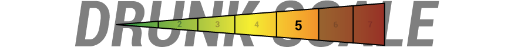

The Harry Potter Octology.
Universal Rules
These rules apply to all seven movies.| Take a Drink When: | |
|---|---|
| 1. | Someone says "Magic", "Muggle", "Hogwarts", "Voldemort" or "Wizard". |
| 2. | The Hogwarts Castle is shown from the outside. |
| 3. | You see magic or a spell. |
| And If You're Not A Baby... (+2/7) | |
| 4. | Pick a character, Drink every time they speak in a new scene. |
Harry Potter and the Sorcerer's Stone.
| Take a Drink When: | |
|---|---|
| 1. | Anytime House Points are awarded or mentioned. |
| 2. | Harry's scar is shown, mentioned or if he touches it. |
Harry Potter and the Chamber of Secrets.
| Take a Drink When: | |
|---|---|
| 1. | "Dobby" or "Mudblood" is said. |
| 2. | Harry's scar is shown, mentioned or if he touches it. |
| Take 2 Drinks When: | |
| 3. | Anyone mentions that someone is hurt or petrified. |
| 4. | The Chamber is mentioned. |
| 5. | Ron, Harry and Hermione are together on screen at the same time. |
Harry Potter and the Prisoner of Azakaban.
| Take a Drink When: | |
|---|---|
| 1. | "Azkaban" is said. |
| 2. | Someone pulls out their wand. (Pause). |
| 2. | Harry interacts with a teacher. (Once per scene). |
| Take 2 Drinks When: | |
| 3. | Sirius Black is mentioned or a picture of him is shown. |
| 4. | An animals transforms. |
| 5. | You see a Hippogriff. |
Harry Potter and the Goblet of Fire.
| Take a Drink When: | |
|---|---|
| 1. | Someone says "three" or "tri". |
| 2. | Someone mentions the Goblet. |
| 3. | You see someone's wand. |
| 4. | x2 Drinks for the mention of Voldemort or an exterior shot of Hogwarts. |
Harry Potter and the Order of the Phoenix.
| Take a Drink When: | |
|---|---|
| 1. | "Witch" is said. |
| 2. | Someone pulls out their wand. (Pause). |
| 3. | A new rule is made at Hogwarts. |
| Take 2 Drinks When: | |
| 4. | Harry dreams about Voldemort. |
Harry Potter and the Half Blood Prince.
| Take a Drink When: | |
|---|---|
| 1. | You see a wand. |
| 2. | The Half Blood Prince's book is shown or mentioned. |
| Take 2 Drinks When: | |
| 3. | There's a flashback. |
| 4. | Someone is severely injured or killed. |
Harry Potter and the Deathly Hallows Part 1.
| Take a Drink When: | |
|---|---|
| 1. | Someone pulls out their wand. (Seriously tho, pause). |
| Take 2 Drinks When: | |
| 2. | Anyone or anything dies. |
| 3. | Someone apparates. |
| 4. | Horcrux is mentioned. |
Harry Potter and the Deathly Hallows Part 2.
| Take a Drink When: | |
|---|---|
| 1. | Someone pulls out their wand. (Seriously tho, pause). |
| 2. | Horcrux is mentioned. |
| Take 2 Drinks When: | |
| 2. | Harry sees into Voldemort's mind (and Vice Versa). |
| 3. | Someone dies. |
| 4. | Horcrux is destroyed. |